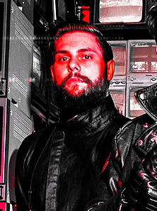

Contained within you will discover truths about the beings who inhabit our band.
Rickie McKnuckles
Rickie was born and raised in west Texas where he lived an ordinary, boring life until he discovered the bass guitar and joined the band Unnecessary Umlauts.
"Bass is like a highly angry Grizzly bear because...well..."
- Bass Guitarist Rickie McKnuckles

John Gruldman
John hails from Chicago, the windy city. He has studied the subtle arts of the six-string electric guitar since age 7 and what he does not know, few can teach. Lead singer Allen Dergado discovered him playing in bars and coffee shops, making a maximum of $10 an hour, but now, due to the band's huge success, he makes an average of $15,000 per performance. He has used much of this newfound money to buy his parents a nice house in upstate New York.
"Guitar is more a mindset rather than a musical instrument, you really have to enter your mind and become one with the guitar to truly make use of it."
- Lead Guitarist John Gruldman
Allen Dergado
Not much is known about the origins of legendary lead singer Allen Dergado. All we know for sure is that He was born in either Germany, Austria, Greenland, or Antarctica. He has claimed that in his teenage years, he was traumatized by the destruction of his home by "Those who hateth". He allegedly had the inspiration to found the band while hunting bears in a cave with an icicle. While this may make him seem strange and spooky, it is completely accurate, and Allen always seems to exude cold and darkness.
"In my teenage years I was traumatized by the destruction of my home by those who hateth, but I really love the band, and our music is great."
- Lead Singer and Founder Allen Dergado
Adrian Renkurch
Adrian grew up in Birmingham Alabama, where his hated step-grandma forced him to take an hour of piano lessons every day. Little did he know that these lessons would lead to him becoming the totally epic keyboardist for the Unnecessary Umlauts, the number one death metal band out there. He was discovered by fellow band member Rickie McKnuckles shivering and homeless on the side of a road in Knoxville, Tennessee (how either of them got there is anyone's guess) and Rickie bought Adrian a cup of coffee. Adrian then noticed a keyboard in the corner of the room and began to play. The rest is history.
"I really hate piano, always have, always will."
- Keyboardist Adrian Renkurch
BROCK
BROCK was found beating evil kidnappers against a wall one day and Allen thought it sounded like music fit for kings, so he invited BROCK to join the band and he gladly agreed. BROCK has now moved away from beating up kidnappers and takes anger management and compassion therapy classes two times a week. We still can't figure out if his name is an acronym or not.
"I am indeed the one they call BROCK."
- Drummer/Security BROCK